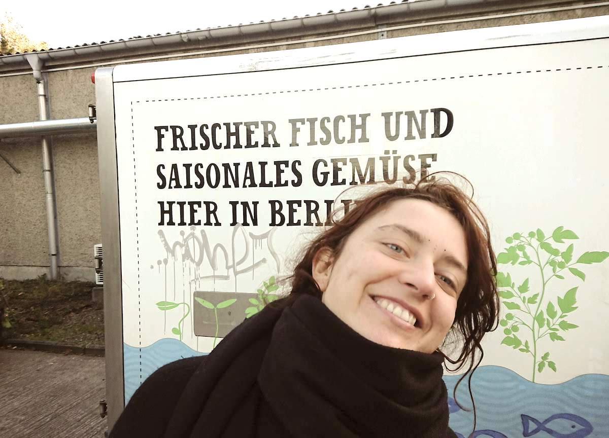

Hi,
I'm Vicktoriia, I am a Russian born girl but I have been living in Germany since I was 19 and in Berlin the last 2 years.
I work in the dentist industry. I am a working person, easygoing, quiet, clean and respectful. I am a professional dentist assistant.
Apart from that I'm a yoga lover, clown apprentice, enjoy dancing and joining friends outside when the weather allows it or spending time with my own at my cozy home with a warm tea.

The apartment in Prenzlauerberg where I've been living for 2 wonderful years with my lovely flatmate has been requested by the owner and we have to leave :/. This is because I'm looking for a small solo apartment as soon as possible.
I am looking for a solo flat, long term and with Anmeldung, 700e warm maximum. Moving date is flexible, though the earlier the better. I am a worker, professional in the dentist industry. I have all the papers, Schufa and the rest. I am super neat and take excellent care of my living space, no pet, quiet and non-smoker.
The clinic where I work is located at Alexanderplatz and I would like to find a home place in a 5 ~ 7 kilometres radius so I can go biking to work or with a nice public transport combination.
Please give me a hint if you know about a place that could be a match with me.
Also don't hesitate asking me whatever you need to know and tell me about any condition you think is important.
Many thanks for your help! :)
Best Regards
Mail me: viktorijakupfer@gmail.com